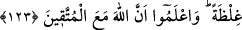

hali gibidir. O: “Ben Rabb’ime gidiyorum.” (es-Sâffât, 37/99) demişti.
Mânâ yolculuğu, kalıp (beden) ve sıfatlarından kalbe ve sıfatlarına, kalp ve
sıfatlarından ruh ve sıfatlarına, ruhtan da kendi sıfatlarından fena ayağı ile Allah’ın
ahlakı ile ahlaklanmaya yol almaktır. İşte bu seyr ilallah (Allah’a seyr)’dir. Allah’ın
sıfatlarının tecellisi sâyesinde kendi zâtının fenâ ayağı ile Allah’ın ahlakından da
Allah’ın zâtına seyr ki bu da seyr billah (Allah ile seyr)’dir. Kendi enâniyyetinden
O’nun hüviyyetine, O’nun hüviyyetinden de ilelebed ulûhiyyetine seyrdir. Bu ise seyr
billahi minallahi ilallahi Teâlâ ve Tekaddes’tir.”
123. Ey îman edenler! Yakınınızda bulunan kâfirlerle savaşın, onlar sizde
(kendilerine karşı) bir katılık bulsunlar. Bilin ki Allah, takvâ sahipleriyle beraberdir.
“Ey îman edenler!” Allah’ı ve O’nun birliğini ikrar edip Risâletin Sâhibi’ni ve
hakkâniyyetini tasdik edenler! “Yakınınızda bulunan kâfirlerle savaşın” Yani önce
yanınızda ve yakınınızda bulunan düşmanla savaşın, uzaklık sırasına göre yakından
başlayarak cihad edin. Yakın düşmanı bırakıp da uzaktaki düşmanla savaşmaya
yönelmeyin. Aksi takdirde yakın olan düşman beldelerinize, ailelerinize ve
çocuklarınıza kasteder. Müslümanların en yakın düşmandan emin olduktan sonra daha
uzakta olanla savaşmaları uygun olur.
Bilesin ki, uzak olsun yakın olsun bütün kâfirlerle savaşmak müminlere vacibdir.
Fakat en yakın düşmandan başlayarak savaşmak daha öncelikli bir vacibdir. Bu
yüzdendir ki Hz. Peygamber (a.s.) evvela kendi kavmi ile savaştı, daha sonra diğer
Araplarla savaşa geçti, daha sonra da Şam (Tebük) savaşını yaptı. Aynı şekilde sahâbe
(r.anhüm) de Şam’ı fethettikten sonra Irak’a girdiler. Bunun gibi her bölge halkına
düşen, bir başka nahiye halkı kendilerine saldırmadıkça önce yakın olan düşmanla
savaşmalarıdır. İslâm’a davet de bu tertibe göre olmuştur. Çünkü Hz. Peygamber (a.s.)
evvela akrabalarını uyarmakla emrolunmuştur. Çünkü yakın akraba şefkate ve ıslâh
edilmeye daha lâyık ve daha fazla hak sahibidir. Çünkü onların hakkı daha önceliklidir.
Âlimler, farz-ı aynlardan sonra en faziletli amelin hangisi olduğu meselesinde ihtilaf
etmişlerdir: İmam Şâfiî (r.a.): “Namaz, bedenle yapılan ibadetlerin en faziletlisi; nafile
namaz da, nafile ibadetlerin en faziletlisidir.” demiştir. İmam Ahmed b. Hanbel ise:
“Farzlardan sonra cihaddan daha faziletli bir ibadet bilmiyorum. Çünkü cihad, Hz.
Peygamber (a.s.)’ın mesleğidir.” demiştir.
İmam Ebû Hanîfe ve Mâlik ise şunları söylemişlerdir: “İyi ameller içerisinde farz-ı
aynlardan sonra ilimden daha faziletli olanı yoktur. Çünkü ameller, ilim üzerine bina
edilir. İlimden sonra cihad gelir.”